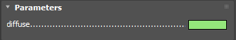

GLSL Support
This page provides information on GLSL support with V-Ray.
Overview
The V-Ray extensions for GLSL (vrayGLSL for short) add several functions and variables that can be used in GLSL shaders with the GLSL Map | VRayGLSLTex texture and the VRayGLSLMtl material. See the Examples section below for some samples.
Additional Preprocessor Defines
__VRAY_GLSL__=110
The __VRAY_GLSL__ macro holds the version of the vrayGLSL. The following list summarizes the available language features in each vrayGLSL version:
Not defined - The initial vrayGLSL version based on GLSL 1.10.59 plus additional support for:
32-bit int type.
bitwise operations.
uniform initializers.
100. Added support for:
__channel and __persistent keyword.
Fixed-size (GL_MAX_TEXTURE_COORDS=16) gl_FragCoord[], vr_TextureDu[] and vr_TextureDv[].
110. Added support for:
__color keyword.
__VRAY_HOST__=300
The __VRAY_HOST__ macro holds the version of V-Ray renderer.
Additional Type Qualifiers
__channel
This type qualifier can be used only on global variables to mark them as render channels. Render channels would be automatically created and attached in the V-Ray VFB. There are several supported channel types: bool, int, float, vec2, vec3. Writing to the render channel is done by assigning a value to the channel variable. Should there be more than a single write event to a channel variable the last written value is considered only. Set a default channel value by using an initializer.
#version 110 __channel vec2 UVSpace = vec2(0.314);void main() { UVSpace = vec2(gl_TexCoord[0]); gl_FragColor = vec4(0.3, 0.8, 0.2, 1.0);}
__persistent
Use this type qualifier to make render channels persistent. Persistent render channels would keep their value and write it to the V-Ray VFB even if the shader execution has reached a discard statement.
#version 110 __persistent __channel vec2 UVSpace = vec2(0.314); void main() { UVSpace = vec2(gl_TexCoord[0]); discard; gl_FragColor = vec4(0.3, 0.8, 0.2, 1.0);}
__color
Use this type qualifier to mark vec3 or vec4 types respectively as RGB or RGBA colors so that a color swatch is generated in the 3ds Max UI to tweak this parameters.
#version 110 __color uniform vec3 input_color = vec3(1.0, 0.5, 0.25); uniform float alpha = 1.0;uniform float gamma = 1.0; void main() { gl_FragColor = vec4(pow(input_color, vec3(1.0 / gamma)), alpha);}
Built-In Varying Variables
varying vec4 gl_TexCoord[16];Texture coordinates. Fixed size array allows for a maximum of 16 texture coordinate channels.
varying vec3 vr_Position;Intersection surface point in camera space coordinates.
varying vec3 vr_Normal;Smooth surface normal unit vector at the surface intersection point in camera space.
varying vec3 vr_TexTangent;Smooth surface tangent unit vector pointing along the texture u direction in camera space.
varying vec3 vr_TexBinormal;Smooth surface binormal unit vector pointing along the texture v direction in camera space.
varying vec3 vr_Direction;Unit vector pointing along the ray in camera space.
varying vec3 vr_Velocity;Velocity of the surface point in camera space for one 3ds Max tick.
varying int vr_TotalRayDepth;The total depth of the ray being traced. It is the sum of all reflection, refraction and global illumination levels traced along the ray path so far.
varying int vr_DiffuseRayDepth;Diffuse depth of the ray being traced. Only the number of global illumination levels traced along the ray path so far are considered.
varying int vr_NumSuperSamples;Number of samples that the parent hit point along the ray path is taking.
varying int vr_SuperSampleIndex;Index of the current supersample for this intersection point.
varying int vr_RayFlags;Ray flags that describe the type of the current ray. See Built-in constants for a list of supported flags.
varying vec3 vr_Origin;Currently traced ray's origin in camera space coordinates.
varying vec3 vr_GeomNormal;The true geometric normal unit vector for the hit primitive in camera space coordinates.
varying vec3 vr_TextureDu[16];The array of surface derivatives with respect to the u direction of the specified texture space. All derivatives are unit vectors in camera space.
varying vec3 vr_TextureDv[16];The array of surface derivatives with respect to the v direction of the specified texture space. All derivatives are unit vectors in camera space.
Built-In Uniform Variables
uniform int vr_NumLights;Number of lights in the scene.
uniform mat4 vr_CameraToWorld;Camera-to-world space transformation matrix.
uniform mat4 vr_WorldToCamera;World-to-camera space transformation matrix.
uniform mat4 vr_CameraToObject;Camera-to-object space transformation matrix.
uniform mat4 vr_ObjectToCamera;Object-to-camera space transformation matrix.
uniform vr_FrameDataSettings vr_FrameData;Built-in instance of the vr_FrameDataSettings structure which holds important per frame parameters. See Built-in types for all available members of the vr_FrameDataSettings type. It is best to hold a local copy of this instance instead of always referring to the original vr_FrameData.
NOTE: When using the transformation matrices, always place the vector to be transformed on the right-hand side.
NOTE: Always wrap the vec3 vector to be transformed in vec4 variables where the w-coordinate is 0.0 for direction vec3 vectors and 1.0 for coordinate vec3 points.
NOTE: vrayGLSL allows user-defined uniform variables to be initialized at global scope. This is a very handy technique to give your shaders default input values.
Built-In Constants
const int VR_TRACE_REFRACT;Tells the vr_trace() function to trace refractions. Must be set in the rayType member of the vr_TraceOptions. See Built-in types for the definition of vr_TraceOptions.
const int VR_TRACE_REFLECT;Tells the vr_trace() function to trace reflections. Must be set in the rayType member of the vr_TraceOptions. See Built-in types for the definition of vr_TraceOptions.
const int VR_TRACE_TRANSPARENT;Tells the vr_trace() function to trace further along the ray as if no surface had been hit. Must be set in the rayType member of the vr_TraceOptions. See Built-in types for the definition of vr_TraceOptions.
const int VR_TRACE_ENVIRONMENT;Tells the vr_trace() function to sample the scene environment using the current ray direction regardless of what is in the ray's path. Must be set in the rayType member of the vr_TraceOptions. See Built-in types for the definition of vr_TraceOptions.
const int VR_REFLECT_FLAG;Flag used to mark rays that have gone through at least one reflection.
const int VR_REFRACT_FLAG;Flag used to mark rays that have gone through at least one refraction.
const int VR_SHADOW_FLAG;Flag used to mark shadow rays.
const int VR_INDIRECT_FLAG;Flag used to mark gathering global illumination rays.
const int VR_GLOSSY_FLAG;Flag used to mark rays that have gone through glossy reflection or refraction.
const int VR_ENVIRONMENT_FLAG;Flag used to mark rays shaded with environment contribution taken into account.
const int VR_SPECULAR_DISPERSAL;Flag used to notify the vr_trace() function that we are tracing a single specular ray. Must be set in the rayGroup member of the vr_TraceOptions. See Built-in types for the definition of vr_TraceOptions.
const int VR_GLOSSY_DISPERSAL;Flag used to notify the vr_trace() function that we are tracing multiple glossy rays. Must be set in the rayGroup member of the vr_TraceOptions. See Built-in types for the definition of vr_TraceOptions.
const int VR_DIFFUSE_DISPERSAL;This constant is reserved for future use.
Built-In Types
The vr_LightIterator structure holds important shade data for a particular light source in the scene. To obtain this information call vr_evalLight with an instance of vr_LightIterator as last argument. All members will be set with the required data for the selected light.
struct vr_LightIterator { vec3 direction; // unit vector pointing towards the light source in camera coordinates. float dot_nl; // dot product of the surface normal (possibly bumped) and the light direction. vec3 contribution; // the direct light contribution from this light including atmospheric effects and distance falloff.};
NOTE: If the light has multiple sample points (i.e. it is an area light), then direction contains an average vector pointing towards the cloud of sample points on the light.
The vr_FrameDataSettings structure packs together uniform variables that hold scene settings for the current frame. The information is easily accessible via the built-in uniform variable vr_FrameData - instance of vr_FrameDataSettings.
struct vr_FrameDataSettings { int frameIndex; // Current frame index. float frameTime; // Time of the current frame in ticks. float frameStart; // Start of the frame in time. Usually frameStart <= frameTime <= frameEnd. float frameEnd; // End of the frame in time. Usually frameStart <= frameTime <= frameEnd. bool isOrthographic; // True if camera rays are parallel. float focalLength; // The camera's focal length. float aperture; // The camera's aperture. float aspectRatio; // The pixel aspect ratio. vec2 imagePlaneOffset; // The camera plane offset. float dofRadius; // The depth of field radius. float dofFocus; // The distance from the camera position to the focal plane. ivec2 imageResolution; // Width and height of the entire output image in pixels ignoring the render region. ivec4 regionMargin; // Render region margin in pixels.};
Deprecated. Please use the __color type qualifier instead. See Additional type qualifiers for more information.
The vr_Color structure represents a rgba color. It is meant to replace the vec4 type in uniform variable declarations where vec4 is used as color.
struct vr_Color { float r; // Red color component. float g; // Green color component. float b; // Blue color component. float a; // Alpha color component.};
NOTE: This structure is only to be used for uniform variable declarations and uniform initializers at global scope. It is used instead of a vec4 when declaring a shader input parameter that is a rgba color. That way the UI will display a convenient color swatch instead of the controls displayed for a vec4 input parameter.
uniform vr_Color diffuse_color = vr_Color(0.9, 0.2, 0.8, 1.0);
The vr_DiffuseBRDFSettings structure holds parameters of a diffuse BRDF. It configures the diffuse BRDF to be attached via the vr_brdf_diffuse built-in function. See Built-in functions for more information.
struct vr_DiffuseBRDFSettings { vec3 color; // The diffuse color for the BRDF. Default value is vec3(1.0, 1.0, 1.0). vec3 normal; // The normal for which to calculate the BRDF. Default value is vec3(1.0, 1.0, 1.0). float roughness; // Diffuse deviation in the [0.0, 1.0] range. Default value is 0.0. vec3 transparency; // The transparency of the BRDF. Default value is vec3(0.0, 0.0, 0.0).};
The vr_GlossyBRDFSettings structure holds parameters of a class of glossy BRDFs, namely the Phong, Blinn and Ward BRDFs. It configures the BRDF to be attached via the vr_brdf_phong, vr_brdf_blinn or vr_brdf_ward built-in functions. See Built-in functions for more information.
struct vr_GlossyBRDFSettings { vec3 color; // The specular(reflection) color for the BRDF. Default value is vec3(1.0, 1.0, 1.0). vec3 normal; // The normal for which to calculate the BRDF. Default value is vec3(1.0, 1.0, 1.0). float highlightGlossiness; // Highlight glossiness of the BRDF in the [0.0, 1.0] range. Default value is 0.7. float reflectionGlossiness; // Reflection glossiness of the BRDF in the [0.0, 1.0] range. Default value is 0.7. int subdivs; // Amount of samples for the glossy reflection. Default value is 8. float anisotropy; // Anisotropy of the BRDF in the (-1.0, 1.0) range. Default value is 0.0. bool traceReflections; // Set if the BRDF should trace reflections. Default value is true. vec3 transparency; // The transparency of the BRDF. Default value is vec3(0.0, 0.0, 0.0). float softenEdge; // Amount of softening the transition from dark to bright areas in specular reflections in the [-1.0, 1.0] range. Default value is 0.001. float anisoRotation; // Rotation of the BRDF anisotropy in degrees. Default value is 0.0.};
The vr_MirrorBRDFSettings structure holds parameters of a mirror BRDF. It configures the mirror BRDF to be attached via the vr_brdf_mirror built-in function. See Built-in functions for more information.
struct vr_MirrorBRDFSettings { vec3 color; // Filter color of the BRDF. Default value is vec3(1.0, 1.0, 1.0). vec3 normal; // The normal for which to calculate the BRDF. Default value is vec3(1.0, 1.0, 1.0). vec3 transparency; // The transparency of the BRDF. Default value is vec3(0.0, 0.0, 0.0).};
The vr_GlassBRDFSettings structure holds parameters of a glass BRDF. It configures the glass BRDF to be attached via the vr_brdf_glass built-in function. See Built-in functions for more information.
struct vr_GlassBRDFSettings { vec3 color; // Filter color of the BRDF. Default value is vec3(1.0, 1.0, 1.0). vec3 normal; // The normal for which to calculate the BRDF. Default value is vec3(1.0, 1.0, 1.0). float glossiness; // Glossiness of the BRDF in the [0.0, 1.0] range. Default value is 0.7. float ior; // Surface index of refraction for the BRDF. Default value is 1.5. int subdivs; // Amount of samples for the glossy reflections/refraction. Default value is 8. vec3 transparency; // The transparency of the BRDF. Default value is vec3(0.0, 0.0, 0.0).};
The vr_LightBRDFSettings structure holds parameters of a V-Ray light BRDF. It configures the light BRDF to be attached via the vr_brdf_light built-in function. See Built-in functions for more information.
struct vr_LightBRDFSettings { vec3 color; // Light color of the BRDF. Default value is vec3(1.0, 1.0, 1.0). vec3 transparency; // The transparency of the BRDF. Default value is vec3(0.0, 0.0, 0.0). bool doubleSided; // Makes the BRDF double sided. Default value is false. bool emitOnBackSide; // Makes the BRDF emit light from its back side as well. If this is off, the material is rendered as black on the back sides. Default value is true.};
The vr_TraceOptions structure holds all settings required for a ray trace. To carry out a successful trace, a well configured instance must be passed as a parameter to the vr_trace function. See the vr_trace built-in function for more information.
struct vr_TraceOptions { int rayType; // One of the built-in constants VR_TRACE_REFLECT, VR_TRACE_REFRACT, VR_TRACE_TRANSPARENT or VR_TRACE_ENVIRONMENT. See Built-in constants. Default values is VR_TRACE_REFLECT. int rayGroup; // One of the VR_SPECULAR_DISPERSAL or VR_GLOSSY_DISPERSAL built-in constants. See Built-in constants. Default value is VR_SPECULAR_DISPERSAL. float ior; // Surface index of refraction at the current hit point. Ignored unless tracing a refracted ray. Default value is 1.44. vec3 ray; // User specified ray to be traced. Must be a unit vector in camera space. Default value is vec3(0.0, 0.0, 0.0). vec3 normal; // The surface normal (possibly bumped) according to which the reflections/refraction will be calculated. Must be a unit vector in camera space. Default value is vec3(0.0, 0.0, 0.0).};
The vr_OcclusionOptions structure holds settings for the vr_occlusion built-in function. It could be used to fine tune the occlusion sampling process. See Built-in functions for more information.
struct vr_OcclusionOptions { float radius; // This parameters determines the amount of area (in units) where the ambient occlusion is calculated. Default value is 10.0. float distribution; // This parameter forces the sampling rays to gather closer to the surface normal. For evenly distributed samples use 0.0. For maximum surface normal concentrated sampling use 1.0. Allowed value range is [0.0, 1.0]. Default value is 0.0. float falloff; // This parameter controls the speed of the transition between occluded and unoccluded areas. Default value is 0.0. int subdivs; // This parameter holds the number of samples that V-Ray takes to calculate the occlusion effect. Lower values render faster but produce a more noisy result. Default value is 8.};
NOTE: When creating an instance of type vr_DiffuseBRDFSettings, vr_GlossyBRDFSettings, vr_MirrorBRDFSettings, vr_GlassBRDFSettings, vr_LightBRDFSettings, vr_TraceOptions, or vr_OcclusionOptions all members are initialized to the given values above.
Built-In Functions
void vr_evalLight(int lightIndex, vec3 position, vec3 normal, out vr_LightIterator light);Evaluates direct light contribution from an indexed light source. Use this function to evaluate direct light illumination of your shader.
lightIndex – index of the light source in the scene; must be in the range [0, vr_NumLights
)
.
position – surface hit point coordinates in camera space.
normal – surface normal in camera space; expected to be a unit vector.
lightIterator – holds the result of the light sampling; see vr_LightIterator.
vec4 vr_trace(vr_TraceOptions traceOptions);Traces the next ray depending on the traceOptions parameter following the light path. Use this function to trace different rays originating from the current surface hit point and get their color result. This function has two modes. If the traceOptions.ray member is set to a non null vector it is traced. Else V-Ray calculates the ray to be traced depending on traceOptions.normal. In both cases traceOptions.rayType and traceOptions.rayGroup must be set.
traceOptions – properly set instance of vr_TraceOptions according to the above description. See Built-in types for more information.
return value – color as a result of tracing the specified ray type from the current surface hit point.
NOTE: When the maximum ray depth limit is hit, the vr_trace function returns black.
NOTE: If the reflected by the bumped normal ray is beneath the hit surface it is replaced by a another one calculated using the geometric (not smoothed) normal. This may bring up artifacts (e.g. in your glossy reflection effects), so weight samples strictly, or limit the normal bumping factor.
NOTE: traceOptions.ior is taken into account only if traceOptions.rayType is specified as VR_TRACE_REFRACT. If we are tracing a refraction and no ior value is set V-Ray will use the default.
vec3 vr_irradiance(vec3 normal, float importance);Use this function to acquire global illumination at the intersection point.
normal – surface normal (possibly bumped) unit vector in camera space.
importance – used to control the precision of the global illumination calculation. Should be in the range [0,1].
return value – rgb color as a result of the GI evaluation. No normalization factors are required.
vec3 vr_randomSample(int sampleIndex, int totalSamples)Retrieves a vector with random component values in the [0,1) range suitable for DMC sampling.
sampleIndex – index of current sample. Must be in the range [0, totalSamples).
totalSamples – the total number of samples we would take from this hit point.
return value – a vec3 vector with random component values in the [0,1) range suitable for DMC sampling.
vec3 vr_textureSize(sampler1D sampler);Use this function to get the size of the attached texture in pixels.
sampler – sampler to which the texture is attached.
return value – vec3 holding the width of the attached texture to the sampler in its x component or 0.0 if there is no texture attached. All other components will be 0.0.
vec3 vr_textureSize(sampler2D sampler);
Use this function to get the size of the attached texture in pixels.
sampler – sampler to which the texture is attached.
return value – vec3 holding the width and height of the attached texture to the sampler in its x and y components or 0.0 if there is no texture attached. The z component will be 0.0.
float vr_occlusion(vr_OcclusionOptions options);Use this function to evaluate the amount of ambient occlusion at the current surface hit point.
options – configuration parameters for the sampling process. See Built-in types for more information.
return value – a float value in the [0.0, 1.0] range. A return value of 0.0 means no surface ambient occlusion, while 1.0 is interpreted as fully occluded surface point.
vec4 textureCube(samplerCube sampler, vec3 sampleDir);Use this function to do cubemap texture sampling.
sampler – sampler to which the cubemap texture is attached. The texture must follow the horizontal cross configuration with +Y pointing up.
sampleDir – sampling direction. Expected to be a normalized unit vector in camera space.
return value – color corresponding to the sampling direction.
Built-in BRDF functions
Although GLSL shaders can use explicit light loops, that approach has limitations (illumination from area lights is not quite correct, it's slow etc.). This is why V-Ray allows you to use several predefined BRDF calls with useful shading components (diffuse, glossy reflection, refraction etc.). The BRDF calls are not executed immediately; instead they are collected during the shader execution into a combined BRDF, which is evaluated after the shader execution completes. In that sense, the GLSL shader is used only to set up and generate the various BRDF calls. BRDF calls are somewhat similar to closures in the Open Shading Language except that they don't return a result that can be manipulated.
void vr_brdf_diffuse(vr_DiffuseBRDFSettings brdfSettings);Use this function to assign a diffuse BRDF to the shader that will be automatically used for light evaluation (both direct and indirect). The new BRDF is layered above other previously attached BRDFs but all result is summed equally. No light loops or vr_irradiance calls are required. A write to gl_FragColor is necessary only to determine the alpha component of the result. The rgb components of gl_FragColor is ignored.
brdfSettings – holds the diffuse BRDF settings. See Built-in types for more information.
void vr_brdf_phong(vr_GlossyBRDFSettings brdfSettings);Use this function to assign a Phong BRDF to the shader that will be automatically used for light evaluation (both direct and indirect). The new BRDF is layered above other previously attached BRDFs but all result is summed equally. No light loops or vr_irradiance calls are required. A write to gl_FragColor is necessary only to determine the alpha component of the result. The rgb components of gl_FragColor is ignored.
brdfSettings – holds the Phong BRDF settings. All anisotropy members are ignored. See Built-in types for more information.
void vr_brdf_blinn(vr_GlossyBRDFSettings brdfSettings);Use this function to assign a Blinn BRDF to the shader that will be automatically used for light evaluation (both direct and indirect). The new BRDF is layered above other previously attached BRDFs but all result is summed equally. No light loops or vr_irradiance calls are required. A write to gl_FragColor is necessary only to determine the alpha component of the result. The rgb components of gl_FragColor is ignored.
brdfSettings – holds the Blinn BRDF settings. See Built-in types for more information.
void vr_brdf_ward(vr_GlossyBRDFSettings brdfSettings);Use this function to assign a Ward BRDF to the shader that will be automatically used for light evaluation (both direct and indirect). The new BRDF is layered above other previously attached BRDFs but all result is summed equally. No light loops or vr_irradiance calls are required. A write to gl_FragColor is necessary only to determine the alpha component of the result. The rgb components of gl_FragColor is ignored.
brdfSettings – holds the Ward BRDF settings. See Built-in types for more information.
void vr_brdf_glass(vr_GlassBRDFSettings brdfSettings);Use this function to assign a Glass BRDF to the shader that will be automatically used for light evaluation (both direct and indirect). The new BRDF is layered above other previously attached BRDFs but all result is summed equally. No light loops or vr_irradiance calls are required. A write to gl_FragColor is necessary only to determine the alpha component of the result. The rgb components of gl_FragColor is ignored.
brdfSettings – holds the Glass BRDF settings. See Built-in types for more information.
void vr_brdf_mirror(vr_MirrorBRDFSettings brdfSettings);Use this function to assign a Mirror BRDF to the shader that will be automatically used for light evaluation (both direct and indirect). The new BRDF is layered above other previously attached BRDFs but all result is summed equally. No light loops or vr_irradiance calls are required. A write to gl_FragColor is necessary only to determine the alpha component of the result. The rgb components of gl_FragColor is ignored.
brdfSettings – holds the Mirror BRDF settings. See Built-in types for more information.
void vr_brdf_light(vr_LightBRDFSettings brdfSettings);Use this function to assign a Light BRDF to the shader that will be automatically used for light evaluation (both direct and indirect). The new BRDF is layered above other previously attached BRDFs but all result is summed equally. No light loops or vr_irradiance calls are required. A write to gl_FragColor is necessary only to determine the alpha component of the result. The rgb components of gl_FragColor is ignored.
brdfSettings – holds the Light BRDF settings. See Built-in types for more information.
Unsupported GLSL Features
The following GLSL features are not supported by the V-Ray GLSL implementation.
Built-in varying variables:
Reading values from float gl_FogFragCoord is not supported. It always returns 0.0 .
vec4 gl_Color returns white for front facing primitives and black otherwise.
vec4 gl_SecondaryColor returns white for front facing primitives and black otherwise.
Built-in uniform variables:
The following transformation matrices are accessible in fragment shaders but have only default values:
gl_ModelViewMatrix
gl_ProjectionMatrix
gl_ModelViewProjectionMatrix
gl_NormalMatrix
gl_ModelViewMatrixInverse
gl_ProjectionMatrixInverse
gl_ModelViewProjectionMatrixInverse
gl_ModelViewMatrixTranspose
gl_ProjectionMatrixTranspose
gl_ModelViewProjectionMatrixTranspose
gl_ModelViewMatrixInverseTranspose
gl_ProjectionMatrixInverseTranspose
gl_ModelViewProjectionMatrixInverseTranspose
gl_TextureMatrix
gl_TextureMatrixInverse
gl_TextureMatrixTranspose
gl_TextureMatrixInverseTranspose
Instead, coordinate space transformations in fragment shaders are done via vr_CameraToWorld, vr_WorldToCamera, vr_CameraToObject, vr_ObjectToCamera. For texture space transformations, the following code may be used:
vec3 tangent = vr_TexTangent;vec3 binormal = vr_TexBinormal;vec3 normal = (gl_FrontFacing) ? vr_Normal : -vr_Normal;mat3 vr_TextureToCamera = mat3(tangent, binormal, normal);
The following uniform variables return black/zero/default values and are therefore not supported:
gl_NormalScale
gl_Point
gl_FrontMaterial
gl_BackMaterial
gl_LightSource
gl_LightModel
gl_FrontLightModelProduct
gl_BackLightModelProduct
gl_FrontLightProduct
gl_BackLightProduct
gl_TextureEnvColor
gl_EyePlaneS
gl_EyePlaneT
gl_EyePlaneR
gl_EyePlaneQ
gl_ObjectPlaneS
gl_ObjectPlaneT
gl_ObjectPlaneR
gl_ObjectPlaneQ
gl_Fog
Special output variables:
Writing to gl_FragDepth is not supported. No changes occur.
Writing to gl_FragData is not supported. Writing to gl_FragColor or discarding the fragment is mandatory and thus cancels out gl_FragData. The rgb components of gl_FragColor are ignored in case a BRDF has been attached to the shader via the vr_brdf built-in functions. See Built-in functions for more information.
Built-in functions:
The texture sampling function texture3D is not supported.
All shadow functions are not supported. V-Ray takes care of shadowing.
All "Proj" and/or "Lod" versions of the texture sampling functions. The optional bias parameter is ignored. V-Ray takes care of texture filtering and level of detail during sampling.
GPU Support
The GLSL shader is supported by V-Ray GPU within limitations. Below you can find detailed information about the GPU support.
|
Feature |
GPU Support |
|
Built-in variables |
|
|
gl_NormalMatrix |
Always identity matrix. |
|
gl_ModelViewMatrixTranspose |
Always identity matrix. |
|
gl_TextureMatrix |
Always identity matrix. |
|
gl_TextureMatrixInverse |
Always identity matrix. |
|
gl_TextureMatrixInverseTranspose |
Always identity matrix. |
|
gl_TextureMatrixTranspose |
Always identity matrix. |
|
gl_ModelViewMatrixInverseTranspose |
Always identity matrix. |
|
gl_FogFragCoord |
Always is a zero. |
|
gl_TexCoord[] |
All gl_TexCoord[] elements are identical, i.e. multiple UVW channels are not supported. 1 |
|
Built-in functions |
|
|
dFdx(); dFdy() |
Always return zero. |
|
fwidth() |
Always returns zero. |
|
V-Ray extensions to GLSL |
|
|
vr_Velocity |
Always is a zero. |
|
vr_NumSuperSamples |
Always is 1. |
|
vr_SuperSampleIndex |
Always is 1. |
|
vr_TextureDu[] |
Not supported. |
|
vr_TextureDv[] |
Not supported. |
|
vr_VertexData[] |
Not supported. |
|
vr_FrameData |
Only the following are supported: vr_FrameData.focalLength |
|
vr_trace() |
Not supported. |
|
vr_evalLight() |
Not supported. If attempted to call it will assign the following constants to the output light iterator: light.dot_nl = -1.0 |
|
vr_intersect() |
Not supported. |
|
BRDF |
Only the following BRDF calls are supported 2: vr_brdf_diffuse() |
|
Keywords |
The following keywords are ignored: __channel __persistent |
Examples
Example: Cool Metallic
This example generates a metallic-looking material.

Rendered shader
Shader parameters
Shader source code:
File: cool_metallic.frag
#version 110__color uniform vec4 front_color = vec4(1.0, 1.0, 0.0, 1.0);__color uniform vec4 background_color = vec4(1.0, 0.0, 1.0, 1.0);uniform float amount = 0.8;uniform float diffuse_scalar = 0.7;uniform float specular_scalar = 0.06;uniform float specular_shininess = 200.0;float phong_specular(vec3 light_dir, vec3 view_dir, vec3 normal, float specular_shininess) { vec3 reflection = reflect(view_dir, normal); float cos_rl = clamp(dot(reflection, light_dir), 0.0, 1.0); return (pow(cos_rl, specular_shininess) * (specular_shininess + 2.0));}void main() { vec3 normal = (gl_FrontFacing) ? vr_Normal : -vr_Normal; vec3 position = vr_Position; vec3 direction = vr_Direction; float dot_dn = clamp(-dot(direction, normal), 0.0, 1.0); float mix_value = 1.0 - pow(dot_dn, 1.0 / amount); vec4 diffuse_color = mix(front_color, background_color, mix_value); vec4 specular_color = vec4(1.0, 1.0, 1.0, 1.0); vec4 diffuse = vec4(0.0, 0.0, 0.0, 1.0); vec4 specular = vec4(0.0, 0.0, 0.0, 1.0); vec4 raw_diffuse = vec4(vec3(diffuse_color) * diffuse_scalar, 1.0); vec4 raw_specular = vec4(vec3(specular_color) * specular_scalar, 1.0); vec4 temp = raw_diffuse + raw_specular; float max_color_comp = max(max(temp.r,temp.g),temp.b); if (max_color_comp > 1.0) { raw_diffuse.rgb /= max_color_comp; raw_specular.rgb /= max_color_comp; } vr_LightIterator light; for (int i = 0; i < vr_NumLights; ++i) { vr_evalLight(i, position, normal, light); float cos_nl = clamp(light.dot_nl, 0.0, 1.0); if (cos_nl > 0.0) { diffuse += vec4(vec3(cos_nl) * light.contribution, 0.0); float specular_coeff = phong_specular(light.direction, direction, normal, specular_shininess); specular += vec4(vec3(specular_coeff * cos_nl) * light.contribution, 0.0); } } diffuse *= raw_diffuse; specular *= raw_specular; vec3 gi_contribution = vr_irradiance(normal, 1.0); diffuse += vec4(raw_diffuse.rgb * gi_contribution, 0.0); gl_FragColor = diffuse + specular;}
Example: Generator Stripe
This example creates a shader with colored stripes.

Rendered shader
Shader parameters
Shader source code:
File: generator_strip.frag
#version 110__color uniform vec4 strip_color = vec4(1.0, 0.5, 1.0, 1.0);__color uniform vec4 background_color = vec4(1.0, 1.0, 0.2, 1.0);uniform float width = 0.5;uniform float fuzz = 0.5;uniform float scale = 5.0;uniform float diffuse_scalar = 0.7;uniform float specular_scalar = 0.06;uniform float specular_shininess = 10.0; float phong_specular(vec3 light_dir, vec3 view_dir, vec3 normal, float specular_shininess) { vec3 reflection = reflect(view_dir, normal); float cos_rl = clamp(dot(reflection, light_dir), 0.0, 1.0); return (pow(cos_rl, specular_shininess) * (specular_shininess + 2.0));}void main() { vec3 normal = (gl_FrontFacing) ? vr_Normal : -vr_Normal; vec3 position = vr_Position; vec3 direction = vr_Direction; float scaled_coord_t = fract(gl_TexCoord[0].t * scale); float fract1 = clamp(scaled_coord_t / fuzz, 0.0, 1.0); float fract2 = clamp((scaled_coord_t - width) / fuzz, 0.0, 1.0); fract1 *= (1.0 - fract2); fract1 = smoothstep(0.0, 1.0, fract1); vec4 diffuse_color = mix(strip_color, background_color, fract1); vec4 specular_color = vec4(1.0, 1.0, 1.0, 1.0); vec4 diffuse = vec4(0.0, 0.0, 0.0, 1.0); vec4 specular = vec4(0.0, 0.0, 0.0, 1.0); vec4 raw_diffuse = vec4(vec3(diffuse_color) * diffuse_scalar, 1.0); vec4 raw_specular = vec4(vec3(specular_color) * specular_scalar, 1.0); vec4 temp = raw_diffuse + raw_specular; float max_color_comp = max(max(temp.r,temp.g),temp.b); if (max_color_comp > 1.0) { raw_diffuse.rgb /= max_color_comp; raw_specular.rgb /= max_color_comp; } vr_LightIterator light; for(int i = 0; i < vr_NumLights; ++i) { vr_evalLight(i, position, normal, light); float cos_nl = clamp(light.dot_nl, 0.0, 1.0); if (cos_nl > 0.0) { diffuse += vec4(vec3(cos_nl) * light.contribution, 0.0); float specular_coeff = phong_specular(light.direction, direction, normal, specular_shininess); specular += vec4(vec3(specular_coeff * cos_nl) * light.contribution, 0.0); } } diffuse *= raw_diffuse; specular *= raw_specular; vec3 gi_contribution = vr_irradiance(normal, 1.0); diffuse += vec4(raw_diffuse.rgb * gi_contribution, 0.0); gl_FragColor = diffuse + specular;}
Example: Glossy Glass
This example creates a shader like glossy glass.
Rendered shader
Shader parameters
Shader source code:
File: glossy_glass.frag
#version 110const int requiredSamples = 8;uniform float refraction_ior = 1.44;uniform float amount = 0.1;uniform float blend = 1.0;void main() { vec3 normal = (gl_FrontFacing) ? vr_Normal : -vr_Normal; vec3 direction = vr_Direction; vr_TraceOptions options; options.rayGroup = VR_SPECULAR_DISPERSAL; options.ior = refraction_ior; options.normal = normal; if((vr_RayFlags & VR_INDIRECT_FLAG) != 0) { options.rayType = VR_TRACE_REFLECT; vec4 reflection = vr_trace(options); options.rayType = VR_TRACE_REFRACT; vec4 refraction = vr_trace(options); float cos_dn = clamp(-dot(direction, normal), 0.0, 1.0); float lerpFactor = (1.0 - pow(cos_dn, 1.0 / blend)); gl_FragColor = mix(refraction, reflection, lerpFactor); return; } vec3 tangent = vr_TexTangent; vec3 binormal = vr_TexBinormal; int numSuperSamples = vr_NumSuperSamples; int superSampleIndex = vr_SuperSampleIndex; float sum = 0.0; float weights[requiredSamples]; vec4 samples[requiredSamples]; vec4 result = vec4(0.0); // determine how much more samples will be taken for this hit point int nSamples = (requiredSamples > numSuperSamples) ? requiredSamples : numSuperSamples; // max nSamples /= numSuperSamples; int startSampleIndex = superSampleIndex * nSamples; options.rayGroup = VR_GLOSSY_DISPERSAL; for(int i = 0; i < nSamples; ++i) { vec3 randomSample = vr_randomSample(startSampleIndex + i, nSamples); vec2 offset = randomSample.xy - 0.5; offset *= (2.0 * amount); vec3 bumpedNormal = normal + offset.x * tangent + offset.y * binormal; options.normal = bumpedNormal; options.rayType = VR_TRACE_REFLECT; vec4 reflection = vr_trace(options); options.rayType = VR_TRACE_REFRACT; vec4 refraction = vr_trace(options); float cos_dn = clamp(-dot(direction, bumpedNormal), 0.0, 1.0); float lerpFactor = (1.0 - pow(cos_dn, 1.0 / blend)); samples[i] = mix(refraction, reflection, lerpFactor); weights[i] = dot(normal, bumpedNormal); sum += weights[i]; } float inverseSum = 1.0 / sum; for(int i = 0; i < nSamples; ++i) { weights[i] *= inverseSum; result += weights[i] * samples[i]; } gl_FragColor = result;}
Example: Glossy Phong
This shader implements a modified Phong model with normal perturbation.

Rendered shader
Shader parameters
Shader source code:
File: glossy_phong.frag
#version 110uniform float amount = 0.1;uniform float diffuse_scalar = 0.7;__color uniform vec4 diffuse_color = vec4(0.9, 0.2, 0.8, 1.0);uniform float specular_scalar = 0.06;uniform float specular_shininess = 20.0;const int requiredSamples = 16;float phong_specular(vec3 light_dir, vec3 direction, vec3 normal) { vec3 reflection = reflect(direction, normal); float cos_rl = clamp(dot(reflection, light_dir), 0.0, 1.0); return (pow(cos_rl, specular_shininess) * (specular_shininess + 2.0));}void main() { bool isGIRay = ((vr_RayFlags & VR_INDIRECT_FLAG) != 0); vec3 normal = (gl_FrontFacing) ? vr_Normal : -vr_Normal; vec3 direction = vr_Direction; vec3 position = vr_Position; vec4 raw_diffuse = vec4(vec3(diffuse_color) * diffuse_scalar, 1.0); vec4 raw_specular = vec4(vec3(specular_scalar), 1.0); vec4 temp = raw_diffuse + raw_specular; float max_color_comp = max(max(temp.r,temp.g),temp.b); if (max_color_comp > 1.0) { raw_diffuse.rgb /= max_color_comp; raw_specular.rgb /= max_color_comp; } vec4 diffuse_contrib = vec4(0.0, 0.0, 0.0, 1.0); vec4 specular_contrib = vec4(0.0, 0.0, 0.0, 1.0); // if this is a GI ray do not try to estimate glossy highlights accurately if(isGIRay) { vr_LightIterator light; for(int j = 0; j < vr_NumLights; ++j) { vr_evalLight(j, position, normal, light); float cos_nl = clamp(light.dot_nl, 0.0, 1.0); if (cos_nl > 0.0) { diffuse_contrib += vec4(cos_nl * light.contribution, 0.0); float specular_coeff = phong_specular(light.direction, direction, normal); specular_contrib += vec4(specular_coeff * cos_nl * light.contribution, 0.0); } } } else { vec3 tangent = vr_TexTangent; vec3 binormal = vr_TexBinormal; int numSuperSamples = vr_NumSuperSamples; int superSampleIndex = vr_SuperSampleIndex; float sum = 0.0; float weights[requiredSamples]; vec4 specular_samples[requiredSamples]; // determine how much more samples will be taken for this hit point int nSamples = (requiredSamples > numSuperSamples) ? requiredSamples : numSuperSamples; // max nSamples /= numSuperSamples; int startSampleIndex = superSampleIndex * nSamples; for(int i = 0; i < nSamples; ++i) { vec3 randomSample = vr_randomSample(startSampleIndex + i, nSamples); vec2 offset = (randomSample.xy - 0.5) * 2.0; offset *= amount; vec3 bumpedNormal = normalize(normal + offset.x * tangent + offset.y * binormal); vr_LightIterator light; for(int j = 0; j < vr_NumLights; ++j) { vr_evalLight(j, position, bumpedNormal, light); float cos_nl = clamp(light.dot_nl, 0.0, 1.0); if(cos_nl > 0.0) { diffuse_contrib += vec4(cos_nl * light.contribution, 0.0); float specular_coeff = phong_specular(light.direction, direction, bumpedNormal); specular_samples[i] += vec4(specular_coeff * light.contribution, 0.0); } } weights[i] = dot(normal, bumpedNormal); sum += weights[i]; } float inverseSum = 1.0 / sum; for(int i = 0; i < nSamples; ++i) { weights[i] *= inverseSum; specular_contrib += weights[i] * specular_samples[i]; } diffuse_contrib /= float(nSamples); } diffuse_contrib += vec4(vr_irradiance(normal, 1.0), 0.0); diffuse_contrib *= raw_diffuse; specular_contrib *= raw_specular; gl_FragColor = diffuse_contrib + specular_contrib;}
Example: Glossy Reflection
This shader implements glossy reflection based on the Phong model.

Rendered shader
Shader parameters
Shader source code:
File: glossy_reflection.frag
#version 110uniform float amount = 0.1;const int requiredSamples = 16;void main() { vec3 normal = (gl_FrontFacing) ? vr_Normal : -vr_Normal; vr_TraceOptions options; options.rayType = VR_TRACE_REFLECT; options.rayGroup = VR_SPECULAR_DISPERSAL; options.normal = normal; if((vr_RayFlags & VR_INDIRECT_FLAG) != 0) { gl_FragColor = vr_trace(options); return; } vec3 tangent = vr_TexTangent; vec3 binormal = vr_TexBinormal; int numSuperSamples = vr_NumSuperSamples; int superSampleIndex = vr_SuperSampleIndex; float sum = 0.0; float weights[requiredSamples]; vec4 samples[requiredSamples]; vec4 result = vec4(0.0); // determine how much more samples will be taken for this hit point int nSamples = (requiredSamples > numSuperSamples) ? requiredSamples : numSuperSamples; // max nSamples /= numSuperSamples; int startSampleIndex = superSampleIndex * nSamples; options.rayGroup = VR_GLOSSY_DISPERSAL; for(int i = 0; i < nSamples; ++i) { vec3 randomSample = vr_randomSample(startSampleIndex + i, nSamples); vec2 offset = (randomSample.xy - 0.5) * 2.0; offset *= amount; vec3 bumpedNormal = normalize(normal + offset.x * tangent + offset.y * binormal); options.normal = bumpedNormal; samples[i] = vr_trace(options); weights[i] = dot(normal, bumpedNormal); sum += weights[i]; } float inverseSum = 1.0 / sum; for(int i = 0; i < nSamples; ++i) { weights[i] *= inverseSum; result += weights[i] * samples[i]; } gl_FragColor = result;}
Example: Oren-Nayar
This shader implements the Oren-Nayar model for direct illumination.
Rendered shader
Shader parameters
Shader source code:
File: oren_nayar.frag
#version 110__color uniform vec4 diffuse_color = vec4(1.0, 1.0, 0.0, 1.0);uniform float diffuse_scalar = 0.7;__color uniform vec4 specular_color = vec4(1.0, 1.0, 1.0 ,1.0);uniform float specular_scalar = 0.06;uniform float diffuse_deviation = 0.5;uniform float specular_shininess = 10.0;float orennayar_diffuse(vec3 light_dir, vec3 view_dir, vec3 normal) { float sigma_sqred = diffuse_deviation * diffuse_deviation; float A = 1.0 - (sigma_sqred / (2.0 * (sigma_sqred + 0.33))); float B = (0.45 * sigma_sqred) / (sigma_sqred + 0.09); float cosThetaI = dot(light_dir, normal); float cosThetaO = -dot(view_dir, normal); float sinThetaI = sqrt(max(0.0, 1.0 - (cosThetaI * cosThetaI))); float sinThetaO = sqrt(max(0.0, 1.0 - (cosThetaO * cosThetaO))); float cosPhiI = dot(light_dir, vr_TexTangent); float cosPhiO = -dot(view_dir, vr_TexTangent); float sinPhiI = sqrt(max(0.0, 1.0 - (cosPhiI * cosPhiI))); float sinPhiO = sqrt(max(0.0, 1.0 - (cosPhiO * cosPhiO))); float temp = max(0.0, (cosPhiI * cosPhiO) + (sinPhiI * sinPhiO)); float sinAlpha; float tanBeta; if (cosThetaI > cosThetaO) { sinAlpha = sinThetaO; tanBeta = (sinThetaI / cosThetaI); } else { sinAlpha = sinThetaI; tanBeta = (sinThetaO / cosThetaO); } float result = (A + (B * temp * sinAlpha * tanBeta)); return clamp(result, 0.0, 1.0);} float phong_specular(vec3 light_dir, vec3 view_dir, vec3 normal) { vec3 reflection = reflect(view_dir, normal); float cos_rl = clamp(dot(reflection, light_dir), 0.0, 1.0); return (pow(cos_rl, specular_shininess) * (specular_shininess + 2.0));}void main() { vec3 normal = (gl_FrontFacing) ? vr_Normal : -vr_Normal; vec4 diffuse = vec4(0.0, 0.0, 0.0, 1.0); vec4 specular = vec4(0.0, 0.0, 0.0, 1.0); vec4 diffuse_contrib = vec4(vec3(diffuse_color) * diffuse_scalar, 1.0); vec4 specular_contrib = vec4(vec3(specular_color) * specular_scalar, 1.0); vec4 temp = diffuse_contrib + specular_contrib; float max_color_component = max(max(temp.r,temp.g),temp.b); if (max_color_component > 1.0) { diffuse_contrib.rgb /= max_color_component; specular_contrib.rgb /= max_color_component; } vec3 view_dir = vr_Direction; vr_LightIterator lightIter; for(int i = 0; i < vr_NumLights; ++i) { vr_evalLight(i, vr_Position, normal, lightIter); float cos_nl = clamp(lightIter.dot_nl, 0.0, 1.0); if (cos_nl > 0.0) { float diffuse_term = orennayar_diffuse(lightIter.direction, view_dir, normal); diffuse += vec4(vec3(diffuse_term * cos_nl) * lightIter.contribution, 0.0); float specular_term = phong_specular(lightIter.direction, view_dir, normal); specular += vec4(vec3(specular_term * cos_nl) * lightIter.contribution, 0.0); } } diffuse *= diffuse_contrib; specular *= specular_contrib; vec3 gi_contrib = vr_irradiance(normal, 1.0); diffuse += vec4(vec3(diffuse_contrib) * gi_contrib, 0.0); gl_FragColor = diffuse + specular;}
Example: Turbulence
This shader changes its color based on a fractal texture.
Rendered shader
Shader parameters
Shader source code:
File: turbulence.frag
#version 110uniform float noise_scale = 2.0;uniform float noise_gain = 0.8;uniform float noise_lacunarity = 3.0;__color uniform vec4 color1 = vec4(1.0, 1.0, 0.0, 1.0);__color uniform vec4 color2 = vec4(1.0, 0.0, 0.0, 1.0);uniform float diffuse_scalar = 0.8;uniform float specular_scalar = 0.02;uniform float specular_shininess = 10.0;const int octaves_count = 4;float phong_specular(vec3 light_dir, vec3 view_dir, vec3 normal, float specular_shininess) { vec3 reflection = reflect(view_dir, normal); float cos_rl = clamp(dot(reflection, light_dir), 0.0, 1.0); return (pow(cos_rl, specular_shininess) * (specular_shininess + 2.0));}void main() { vec3 normal = (gl_FrontFacing) ? vr_Normal : -vr_Normal; vec3 position = vr_Position; vec3 direction = vr_Direction; vec3 noise_position = vec3(gl_TexCoord[0]); vec3 scaled_position = noise_position * vec3(noise_scale); float noise_amplitude = 2.0; float noise_frequency = 0.5; vec3 noise_value = vec3(0.0); if((vr_RayFlags & VR_INDIRECT_FLAG) != 0) { noise_value = vec3(0.5); } else { for (int i = 0; i < octaves_count; ++i) { noise_value += abs(noise3(scaled_position * vec3(noise_frequency))) * vec3(noise_amplitude); noise_frequency *= noise_lacunarity; noise_amplitude *= noise_gain; } } vec4 diffuse_color = mix(color1, color2, vec4(noise_value, 1.0)); vec4 specular_color = vec4(1.0, 1.0, 1.0, 1.0); vec4 diffuse = vec4(0.0, 0.0, 0.0, 1.0); vec4 specular = vec4(0.0, 0.0, 0.0, 1.0); vec4 raw_diffuse = vec4(vec3(diffuse_color) * diffuse_scalar, 1.0); vec4 raw_specular = vec4(vec3(specular_color) * specular_scalar, 1.0); vec4 temp = raw_diffuse + raw_specular; float max_color_comp = max(max(temp.r,temp.g),temp.b); if (max_color_comp > 1.0) { raw_diffuse.rgb /= max_color_comp; raw_specular.rgb /= max_color_comp; } vr_LightIterator light; for(int i = 0; i < vr_NumLights; ++i) { vr_evalLight(i, position, normal, light); float cos_nl = clamp(light.dot_nl, 0.0, 1.0); if (cos_nl > 0.0) { diffuse += vec4(vec3(cos_nl) * light.contribution, 0.0); float specular_coeff = phong_specular(light.direction, direction, normal, specular_shininess); specular += vec4(vec3(specular_coeff * cos_nl) * light.contribution, 0.0); } } diffuse *= raw_diffuse; specular *= raw_specular; vec3 gi_contribution = vr_irradiance(normal, 1.0); diffuse += vec4(raw_diffuse.rgb * gi_contribution, 0.0); gl_FragColor = diffuse + specular;}
Example: Blinn Material
Material based on the Blinn BRDF model.
Rendered shader
Shader parameters
Shader source code:
File: blinn_material.frag
#version 110uniform sampler2D diffuseTex;__color uniform vec4 specular = vec4(1.0, 1.0, 1.0, 1.0);uniform float highlightGlossiness = 0.8;uniform sampler2D anisotropyTex;void main() { vec3 normal = (gl_FrontFacing) ? vr_Normal : -vr_Normal; vec2 uv_coords = vec2(gl_TexCoord[0]); vr_DiffuseBRDFSettings diffuseSettings; diffuseSettings.color = vec3(texture2D(diffuseTex, uv_coords)); diffuseSettings.normal = normal; vr_brdf_diffuse(diffuseSettings); vr_GlossyBRDFSettings blinnSettings; blinnSettings.color = vec3(specular); blinnSettings.normal = normal; blinnSettings.highlightGlossiness = highlightGlossiness; blinnSettings.anisotropy = 2.0 * texture2D(anisotropyTex, uv_coords).x - 1.0; blinnSettings.traceReflections = false; vr_brdf_blinn(blinnSettings); gl_FragColor = vec4(vec3(0.0), 1.0);}
Example: Transparent Material
Transparent material using the alpha output.
Rendered shader
Shader parameters
Shader source code:
File: transparent_material.frag
#version 110__color uniform vec4 diffuse = vec4(0.6, 0.2, 1.0, 1.0);uniform sampler2D transparency;void main() { vec3 normal = (gl_FrontFacing) ? vr_Normal : -vr_Normal; vr_DiffuseBRDFSettings diffuseSettings; diffuseSettings.color = vec3(diffuse); diffuseSettings.normal = normal; vr_brdf_diffuse(diffuseSettings); vec3 textureSample = vec3(texture2D(transparency, vec2(gl_TexCoord[0]))); float alpha = dot(textureSample, vec3(0.3333333)); gl_FragColor = vec4(vec3(0.0), alpha);}
Example: Render Channels
Shader attaching and writing to render channels in the V-Ray VFB.
Rendered shader

Shader parameters
Shader source code:
File: render_channel.frag
#version 110__color uniform vec4 diffuse = vec4(0.3, 0.8, 0.2, 1.0);__channel vec3 NormalSpace = vec3(0.314);void main() { vec3 normal = (gl_FrontFacing) ? vr_Normal : -vr_Normal; NormalSpace = normal; vr_DiffuseBRDFSettings diffuseSettings; diffuseSettings.color = vec3(diffuse); diffuseSettings.normal = normal; vr_brdf_diffuse(diffuseSettings); gl_FragColor.a = 1.0;}
Notes
-
OpenGL Shading Language specification officially supported is 1.10.59
-
texture() is a synonym for texture2D(). It was added for compatibility with shaders written in GLSL 1.5. The V-Ray implementation of GLSL follows the GLSL 1.10 specification, but with a bunch of extensions to support more modern codebases. The texture() function overload is one of them. Additionally, there is another set of texture overloads: vec4 texture2D(sampler2D sampler, int reserved) and vec4 texture(sampler2D sampler, int reserved), which are equivalent. They can be used to sample the given texture at the current UV-coordinates of the current intersection point, as these overloads do not require to explicitly specify a coord argument. The reserved parameter is not used and should be -1. These fixed-coordinates sampling functions are only available in V-Ray though and ideally one should guard such calls in #ifdef _ VRAY_GLSL _ blocks.